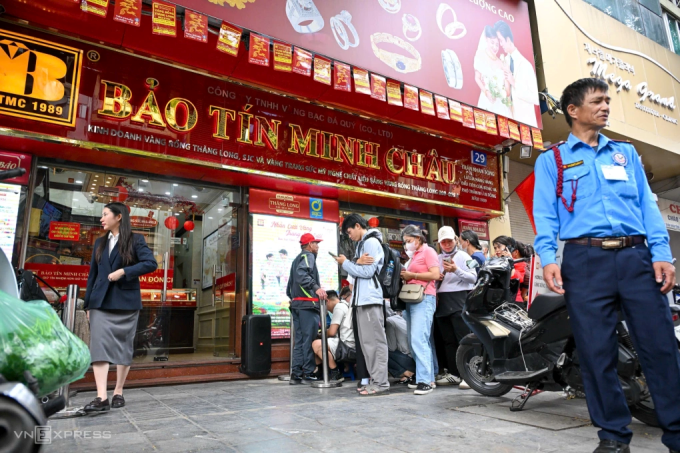

Mỹ – Iran đạt thỏa thuận về ngừng bắn, mở cửa eo biển Hormuz trong hai tuần
Mỹ và Iran đồng ý ngừng bắn trong hai tuần, Tehran sẽ cho phép tàu thuyền đi qua eo biển Hormuz trong thời gian này "với sự điều phối từ lực lượng vũ trăng".
18h ngày 6/4, chỉ một tiếng sau khi Công an Hà Nội thông tin việc nhà sáng lập Vũ Minh Châu và con trai bị khởi tố, Bảo Tín Minh Châu lên tiếng. Thương hiệu này cho biết vụ việc liên quan đến các lãnh đạo đang được các cơ quan chức năng xem xét, làm rõ theo quy định của pháp luật. Công ty đang phối hợp nghiêm túc với cơ quan điều tra, cung cấp đầy đủ hồ sơ tài liệu. "Mọi hoạt động kinh doanh vẫn diễn ra bình thường và thông suốt", thông cáo báo chí của Bảo Tín Minh Châu khẳng định. Doanh nghiệp đã kiện toàn bộ máy quản trị theo hướng độc lập. Kể từ tháng 10/2024, bà Phạm Lan Anh là Giám đốc kiêm người đại diện theo pháp luật của công ty này.
Bảo Tín Minh Châu cam kết toàn bộ sản phẩm vàng bạc đá quý công ty cung cấp ra thị trường đều đáp ứng các tiêu chuẩn về tuổi vàng, khối lượng và chất lượng. Doanh nghiệp này cũng sẽ khắc phục triệt để những tồn tại trước đây, sau khi có kết luận chính thức từ cơ quan chức năng.

Theo ghi nhận của VnExpress, hoạt động mua bán của thương hiệu này hôm nay vẫn diễn ra bình thường. Từ buổi sáng, hàng chục người đã có mặt tại các cơ sở của Bảo Tín Minh Châu để giao dịch. Lượng người đến mua vẫn đông hơn người bán. Lúc 17h30 hôm nay, nửa tiếng sau khi Công an Hà Nội công bố thông tin liên quan, hơn chục người vẫn đang có mặt tại cửa hàng Bảo Tín Minh Châu trên phố Cầu Giấy để mua vàng. Trong khi đó, người bán gần như không có.
Theo chia sẻ của một nhân viên, hôm nay công ty bán cho mỗi khách tối đa 1 lượng vàng nhẫn trơn, nhưng giới hạn mỗi người một sản phẩm. Thương hiệu này cũng thông báo đã hết nhẫn loại 0,5 chỉ, giao dịch trên 20 triệu đồng bắt buộc phải chuyển khoản. Cuối ngày, thương hiệu niêm yết giá vàng nhẫn trơn tại 168,1 - 171,1 triệu đồng một lượng, giảm hơn 3 triệu đồng so với hôm qua.
Ngày 2/4, Công an hà Nội đã khởi tố ông Vũ Minh Châu, nhà sáng lập Bảo Tín Minh Châu cùng con trai Vũ Minh Tú (Trưởng ban trợ lý độc lập) và hai nữ nhân viên kế toán về tội Vi phạm quy định về kế toán gây hậu quả nghiêm trọng. Cơ quản quản lý cáo buộc hành vi của ông Châu cùng cộng sự gây thiệt hại cho ngân sách Nhà nước là khoảng 150 tỷ đồng. Bảo Tín Minh Châu là một trong những thương hiệu vàng lớn tại Hà Nội, được ông Vũ Minh Châu thành lập năm 1995. Hiện, thương hiệu có 4 cơ sở kinh doanh ở Hà Nội và hơn 200 đại lý trên toàn quốc. Theo báo cáo trên Cổng thông tin quốc gia về đăng ký doanh nghiệp, Bảo Tín Minh Châu có vốn điều lệ 400 tỷ đồng, tính đến ngày 26/1 năm nay. Trong đó, ông Châu nắm hơn 97% cổ phần.

Mỹ và Iran đồng ý ngừng bắn trong hai tuần, Tehran sẽ cho phép tàu thuyền đi qua eo biển Hormuz trong thời gian này "với sự điều phối từ lực lượng vũ trăng".

Người dân Iran tập trung trên đường phố Tehran, vậy có và hô khẩu hiệu sau khi lệnh ngừng bắn hai tuần với Mỹ được công bố.

Nằm ở bộ nam eo biển Hormuz, cách Iran gần 34 km, bán đảo Musandam của Oman đang chứng kiến những hệ lụy về kinh tế và đời sống khi xung đột bùng phát.